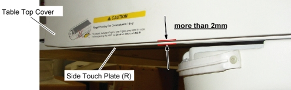
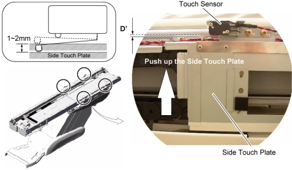
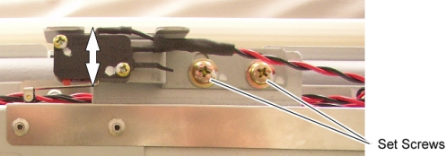
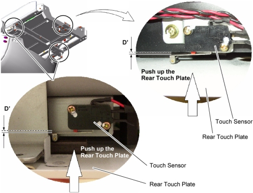
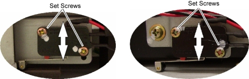
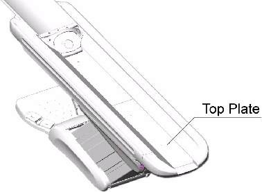
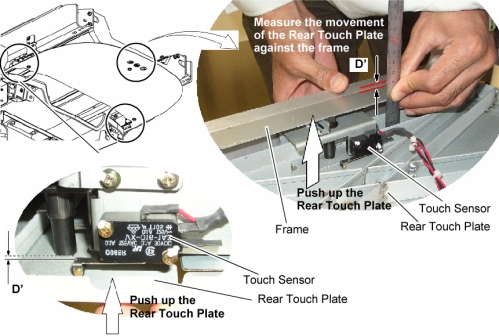
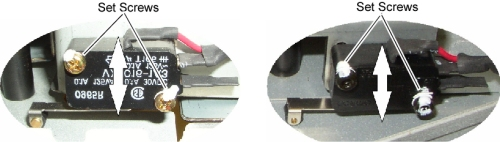
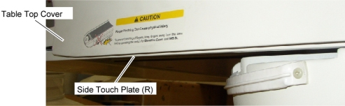

Operating Documentation
Direction 5307452-8EN, Rev# 4
Discovery CT750 HD Service Methods - Adv
Operating Documentation |
| Required Persons | Preliminary Reqs | Procedure | Finalization |
|---|---|---|---|
| 1 |
| Last Revised: | 26 August 2008 |
Inspect the side touch sensor for position as follows:
Verify that the position of the both side touch plates are stuck out from the bottom surface of the Table top cover more than 2mm (see illustration below).
Illustration 1: Position of the Touch Sensor Plate

Remove the following Table covers:
Top Cover (Left/Right)
Rear Top Cover
Push up the side touch plate to activate the touch sensor, and measure the operating distance (D’) shown in illustration blow, then verify that the operating distance (D’) is 1mm ~ 2mm.
Illustration 2: Side Touch Sensors

If the operating distance (D’) is out of tolerance, adjust the sensor position by two set screws (Torque: 2.6Nm / 1.92ft.-lbs).
Illustration 3: Set Screws of Side Touch Sensor

For GT1700: Inspect the rear touch sensor for position as follows:
Remove the following Table Covers:
Top Cover (Left/Right)
Rear Top Cover
Push up the rear touch plate to activate the touch sensor, and measure the operating distance (D’) shown in illustration below, then verify that the operating distance (D’) is 1mm ~ 2mm.
Illustration 4: Rear Touch Sensors of GT1700

If the operating distance (D’) is out of tolerance, adjust the sensor position by two set screws (Torque: 0.56Nm / 0.41ft.-lbs).
Illustration 5: Set Screws of Rear Touch Sensor

For GT2000 and Global PET/CT Table: Inspect the rear touch sensor for position as follows:
Remove the following Table covers:
Top cover (Left/Right)
Rear Top Cover
Remove the top plate.
Illustration 6: Table Top Plate

Push up the rear touch plate to activate the touch sensor, and measure the operating distance (D’) shown in illustration below, then verify that the operating distance (D’) is 1mm ~ 2mm.
Illustration 7: Rear Touch Sensor (GT2000 and Global PET/CT Table)

If the operating distance (D’) is out of tolerance, adjust the sensor position by two set screws (Torque: 0.56Nm / 0.41ft.-lbs).
Illustration 8: Set Screws of Rear Touch Sensor (GT2000 and Global PET/CT Table)

Re-intall the Table covers.
Power up the Table from the service Switch Panel in Gantry.
Move the cradle In/Out repeatedly, and raise and lower the Table repeatedly to verify that the Table movement is operating normally.
Push up the side touch plate, and verify that the touch sensor is activated without being hidden behind the Table top cover.
Illustration 9: Check Side Touch Sensor
